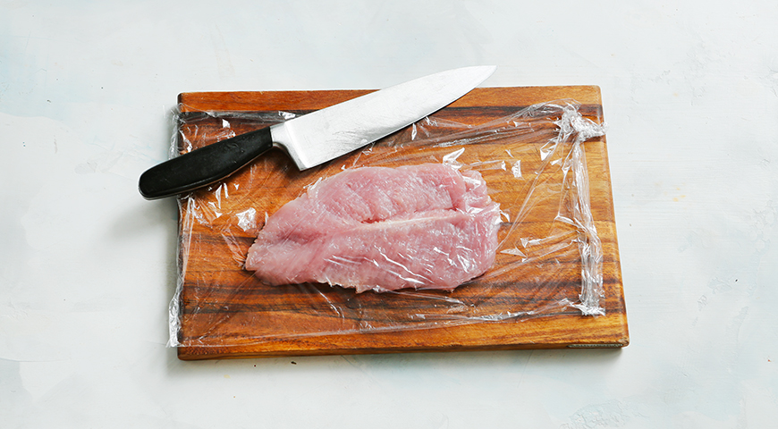
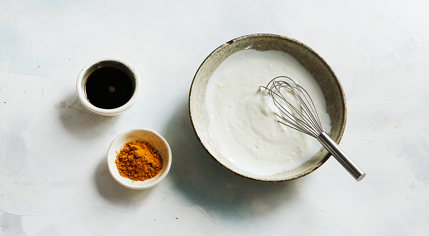
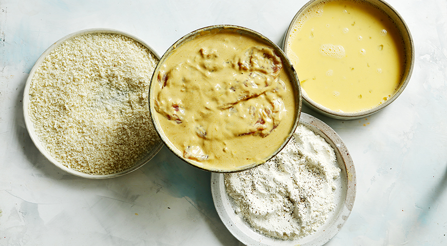
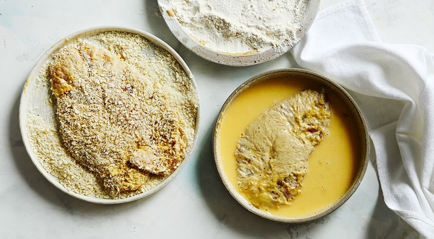
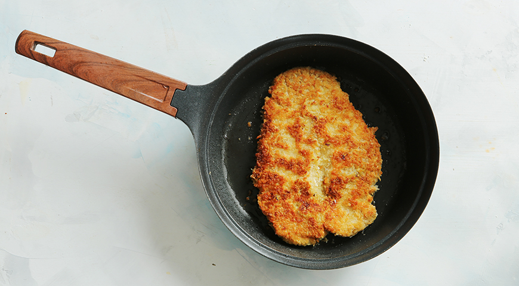

филе индейки – 800 г чеснок – 2 зубчика порошок карри – 1 ч. л. питьевой натуральный йогурт – 300 мл соевый соус – 3 ст. л. яйца – 2 шт. мука – 80 г панировочные сухари – 100 г растительное масло для жарки – по необходимости свежемолотый черный перец – по вкусу
Шаг 1
Подготовьте индейку. Вымойте филе и нарежьте поперек ломтиками толщиной 1– 1,5 см. Накройте пленкой и отбейте плоской стороной большого ножа. Переложите в миску. 
Шаг 2Для маринада чеснок очистите и пропустите через пресс. Добавьте порошок карри, натуральный йогурт, соевый соус и перемешайте. Оставьте в прохладном месте на 30 минут. 
Шаг 3Яйца слегка взбейте венчиком в миске. В одну тарелку всыпьте муку и поперчите ее. В другую насыпьте панировочные сухари. Отбивные достаньте из маринада и обсушите бумажными полотенцами. 
Шаг 4В большой сковороде нагрейте небольшое количество растительного масла. Отбивные обмакните в яйца, затем обваляйте в муке. Снова обмакните в яйца и обваляйте в сухарях. 
Шаг 5Выложите отбивные на сковороду и обжарьте с одной стороны до румяной корочки на среднем огне. Переверните и обжарьте до корочки с другой. Доведите до готовности под крышкой на слабом огне (5 минут). 